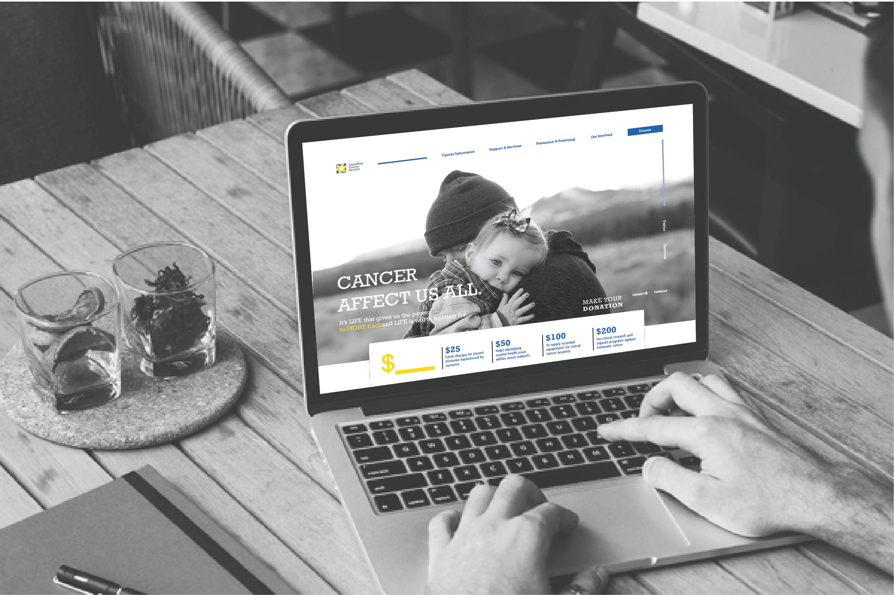
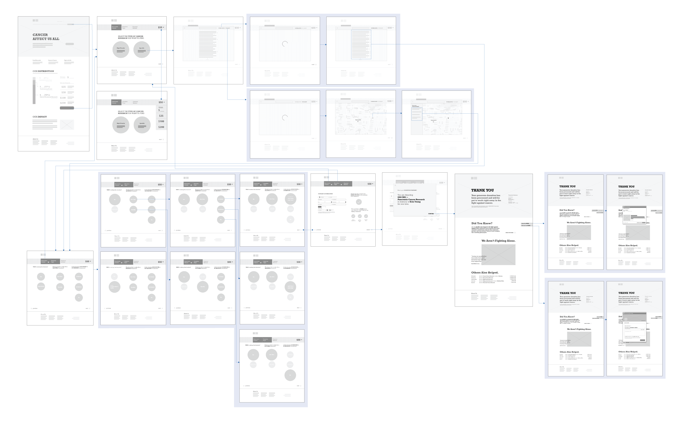
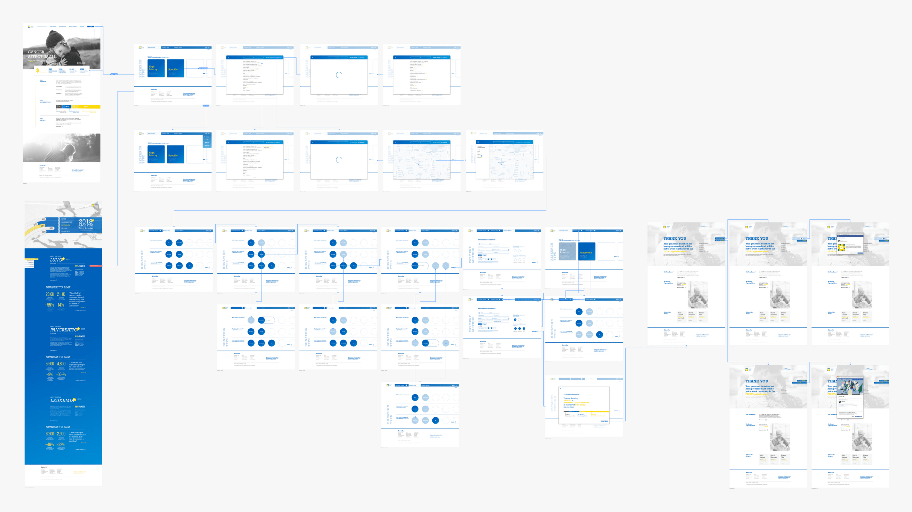

DESIGN PROCESS
CLIENT
Canadian Cancer Society is a national, community-based organization of volunteers whose mission is the eradication of cancer and the enhancement of the quality of life of people living with such disease.
PROBLEM
In the last five year, CCS has been on a steady downfall regarding their annual revenue ($204.264M to $149.954M) along with annual giving ($44.156M to $38.428M). This is due to the inability to fulfill the need of a shifting demographic within the new group of potential donors, which results in a situation where 60% of high priority research has yet to be funded (2016).
“The demographic that is moving into retirement has traditionally been the backbone of volunteering and giving... “
Toronto Star Newspaper
“People don’t just write cheque in good faith.”
Dr. Krishan Mehta, President of the Association of Fundraising Professionals, Greater Toronto
TARGET AUDIENCE
Through extensive research, our team had dissected CCS’s customer segment into four main categories: the easy givers, the critical supporters, the enthusiasts, and lastly, the non-donors. Out of the four, we decided to focus our product on targeting towards the critical supporters since they represent the emerging demographic of donors and also accounts for easy givers and could potentially transition into enthusiasts over time.
Photos help to describe our target audience - Critical Supporters.
PROPOSED SOLUTION
Through extensive secondary research, our team learned that it is essential to provide regular feedback and update for the donors who nowadays demand transparency and immediate benefit. However, it is often troublesome to give quick return due to the nature of cancer treatment and research which requires a lengthy time investment. So instead of showing results, our team wanted to set a clear donation expectation by telling the donors what exactly will they be investing, such that they could build trust through upfront explicit donation distribution.

A new Canadian Cancer Soceity Web Redesign with explicit donation distribution.
WEB FLOW
By creating informational architecture and low fidelity user flow, it ensures the fluidity of our project as well as the visual hierarchy.


EXECUTION
INTERVENTION DELIVERABLES
Due to the time constraint and the scope of the project, I decided to focus on creating the landing page, the actual process of donating, and the confirmation of donation. These components provide enough ground to innovate while avoiding the need to redesign and reorganize the original information architecture.
PRODUCT OVERVIEW
I’ve divided the product into three distinct stages which are categorized as Explore, Engage and Invite. Each stage accommodates different features and functions to prompt the users to the next step.
LANDING
The current CCS doesn’t necessarily have a designated landing page. Instead, it uses one of the sub-pages within their Get Involved segment as their landing page. It uses compelling visual and engaging words to emphasize with the visitors for them to donate to the cause. However, potential donors nowadays seek beyond good faith. They want to attain a clear picture of their investment.
I had integrated a segment providing an exact breakdown to demonstrate how donor’s donation is distributed. I used slide animation to further emphasize on the section. Although in reality, this is nearly impossible, I believe that people should have the right to know what they are investing.
DONATION
To further elevate the transparency aspect, I wanted to design a donation process that is not only efficient but also allows the donors to have an improved knowledge of precisely what they are giving to. That being said, I had made integration into the existing donation process, where donors have the freedom to select the type of cancer and its research they want to fund. This feature enabled a direct relationship between the donors and the high priority research giving the users a sense of need.
When the user attempts in searching for a specific type of cancer research, A modular popout would appear to support the massive capacity of cancer types. Also, I had incorporated indicators to showcase high prioritized cancer types along with its current funding progress.
Through our design sprint, we determined that by allowing the user to search base on nearby institutions, it enables the personal connection with the person, which could potentially affirm donor’s faith in donating since many people have strong affiliation towards certain health institutions.
I’d made progress navigation bar to enable the users from going back and forth to check and confirm their decision. Users can also change the gift amount at any time during the donation process.
CONFIRMATION PAGE
Before proceeding to the confirmation page, I’d implemented a modular popout displaying the overall donation summary along with specific donation distribution. By providing how each cent is used, this then reaffirms on the user's decision of donation.
Confirmation Page Preview
We believe that donors can be a source of appeal themselves. That being said, we wanted to further utilize this aspect by increasing the exposure of other peoples’ experience associated with cancer as well as increased exposure of each’s contribution in the fight against cancer.
On the confirmation page, a CTA is being provided to allow the donors to share their experience with cancer and donation with the others through different social media platforms such as Twitter and Facebook.
I’d also added another CTA to enable enthusiastic individuals to begin their fundraising against cancer. This is done by adapting the fundraising feature of Facebook and integrated through a new window popout extension.
OTHER ENTRY POINT - MICROSITE
In addition to all the above features, our team also came up with a microsite that features some of the high priority cancer research which requires immediate funding from the people. The site acted as a way of attraction to allow the users to quickly empathize without having the need to elaborate information on the Canadian Cancer Society's main website.
FINAL THOUGHT
Throughout this project, I was able to learn the importance of transparency and how it can significantly affect the business, both positively and negatively. Whether it’s the customers, the users, or the people, the issue with trust persistently exists for any audience group. That being said, while designing for our project’s interfaces and prototypes, I tried to approach the design with a strong emphasis on transparency building. I focused on making explicit donation distribution more apparent to the donors; allowing them to know the allocation of their investment. While giving absolute freedom and personal privacy, I also utilized other donor's information to provide relevancy and affirm users' donating decisions. In the end, this project taught me that the best business-to-customer relationship forms when the client manages to fulfill the users' needs by offering credibility, empathy, and passion to the people.